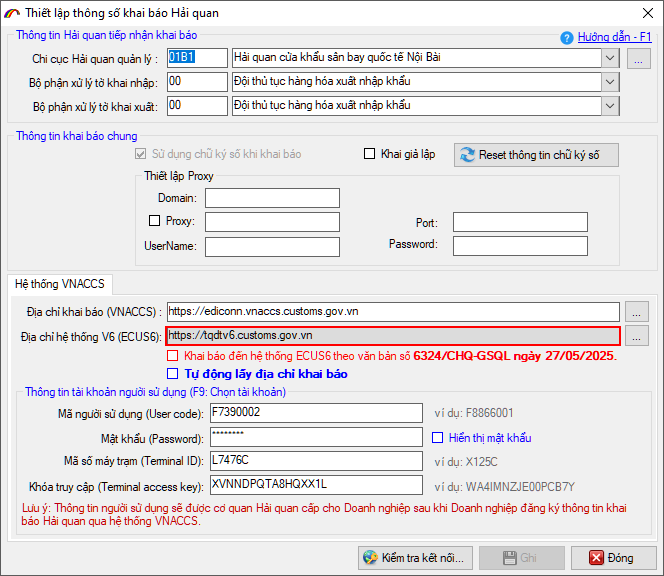
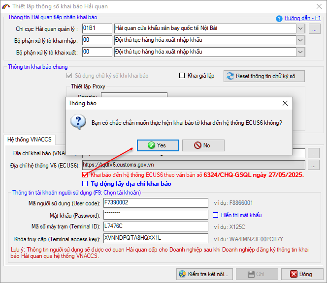
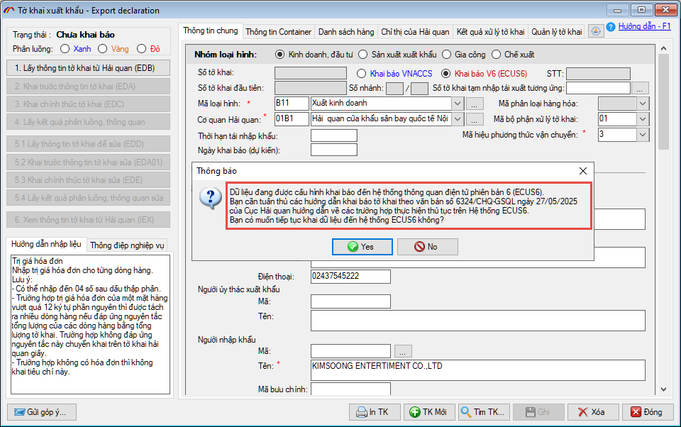
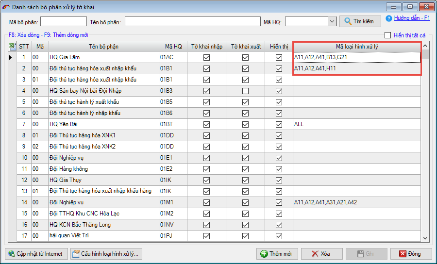
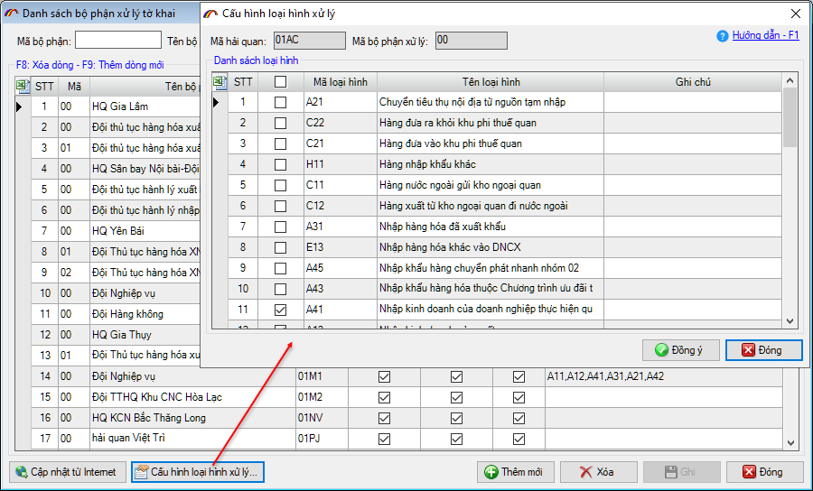
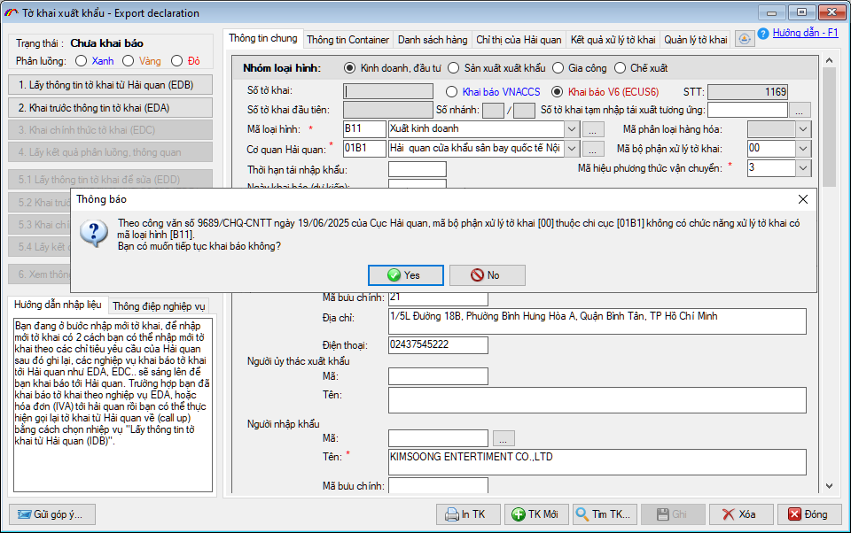

NHỮNG THAY ĐỔI TRÊN BẢN ECUS5VNACCS 2018
(Phiên bản update 29/06/2025)
Phần mềm ECUS5VNACCS2018 - Ngày phát hành 01/07/2025 | Version 6.0.174 | Lastupdate 29/06/2025 | Phiên bản CSDL 300
Phiên bản cập nhật ngày 29/06/2025 được phát hành ngày 01/07/2025 sửa đổi bổ sung một số chức năng, nhằm đáp ứng yêu cầu nghiệp vụ theo mô hình cơ cấu tổ chức Hải quan mới. Các chức năng được sửa đổi, bổ sung cụ thể như phần chi tiết dưới đây:
- 1. Bổ sung địa chỉ khai báo đến hệ thống ECUS6.
Phần mềm bổ sung thêm địa chỉ khai báo đến hệ thống thông quan điện tử phiên bản 6 (ECUS6) trong form Thiết lập thông số khai báo. Đây là địa chỉ được sử dụng để khai báo các nghiệp vụ và trường hợp cụ thể theo hướng dẫn tại
Công văn số 6324/CHQ-GSQL.

Khi cần khai báo đến hệ thống thông quan điện tử phiên bản 6 (ECUS6), doanh nghiệp đánh dấu tích chọn vào: Khai báo đến hệ thống ECUS6 theo văn bản 6324/CHQ-GSQL ngày 27/05/2025.

LƯU Ý: CÁC TRƯỜNG HỢP THỰC HIỆN THỦ TỤC TRÊN HỆ THỐNG ECUS6
- 1. Khi Hệ thống VNACCS/VCIS gặp sự cố, thủ tục hải quan đối với
hàng hóa xuất khẩu, nhập khẩu (trừ hàng hóa xuất khẩu, nhập khẩu trị giá thấp
gửi qua dịch vụ bưu chính, chuyển phát nhanh) và hàng hóa vận chuyển chịu
sự giám sát hải quan được thực hiện trên Hệ thống Ecus6.
- 2. Đối với các trường hợp hàng cứu trợ khẩn cấp, hàng viện trợ nhân đạo;
hàng xuất khẩu, nhập khẩu phục vụ an ninh quốc phòng; hàng quà biếu, quà
tặng, tài sản di chuyển của cá nhân; hàng hóa tạm nhập tái xuất, tạm xuất tái
nhập để phục vụ công việc trong thời hạn nhất định trong trường hợp mang theo
khách xuất cảnh, nhập cảnh nếu người khai hải quan không thực hiện thủ tục
trên Hệ thống VNACCS/VCIS, Cục Hải quan yêu cầu Chi cục Hải quan các
khu vực triển khai hướng dẫn người khai hải quan thực hiện thủ tục hải quan
trên Hệ thống Ecus6, không thực hiện khai báo trên tờ khai giấy đối với các
trường hợp này.
- 3. Trường hợp tờ khai tạm xuất, tạm nhập đã được đăng ký trên Hệ thống
Ecus6 thì khi làm thủ tục tái xuất, tái nhập tương ứng người khai hải quan thực
hiện thủ tục trên Hệ thống Ecus6.
Trong trường hợp doanh nghiệp lựa chọn khai báo đến hệ thống ECUS6, khi khai báo phần mềm sẽ hiển thị thông báo để bạn xác nhận như sau:

- 2. Cập nhật, bổ sung danh mục Mã bộ phận xử lý tờ khai
Phần mềm cập nhật bổ sung danh mục Mã bộ phận xử lý tờ khai, đáp ứng yêu cầu về việc thực hiện tự động phân công công chức kiểm tra hồ sơ trên hệ thống VNACCS/VCIS theo Công văn số 9689/CHQ-CNTT ngày 19/06/2025 của Cục Hải quan.
Trên form danh mục Mã bộ phận xử lý, sẽ bổ sung thêm cột thiết lập Mã loại hình tiếp nhận cho Mã bộ phận xử lý tương ứng.

Đồng thời, cho phép thay đổi cấu hình, lựa chọn các mã loại hình khi cần thiết bằng cách nhấn nút Cấu hình loại hình xử lý...

Khi doanh nghiệp chọn Mã bộ phận xử lý không phù hợp cho loại hình đang khai báo, phần mềm sẽ hiển thị cảnh báo với nội dung như sau:

- 3. Cùng nhiều chức năng, tiện ích khác nhằm nâng cao hiệu suất chương trình...
Bản quyền © thuộc về Công ty TNHH Phát triển công nghệ Thái Sơn